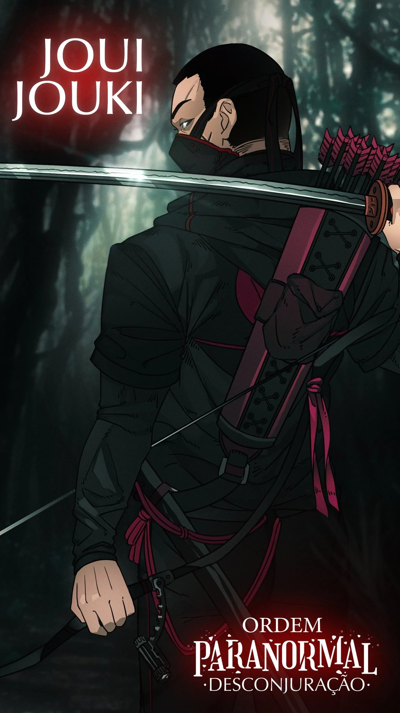
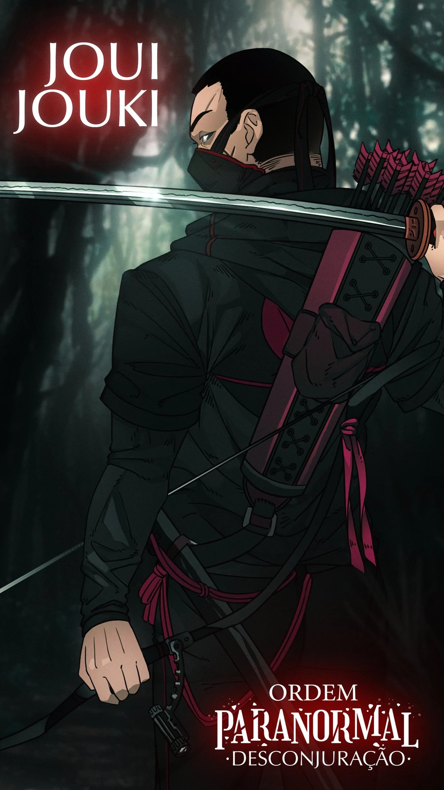

RESUMO DA TEMPORADA
O Santo Berço foi destruído. A reestruturada Ordo Realitas agora opera em uma base subterrânea na cidade de São Paulo. De lá, o homem conhecido como Senhor Veríssimo comanda uma legião de agentes que, com auxílio de métodos mais intensos, busca salvar o mundo da ameaça crescente do ocultismo. Novos agentes entram para ordem, a novata Beatrice, acompanhada de Erin e Fernando, que vive uma misteriosa vida dupla. Os veteranos Joui, Kaiser e Arthur completam a formação dessa nova equipe. Nessa missão, o objetivo é encontrar Elizabeth Webber, uma membro muito importante da Ordem, que desapereceu enquanto investigava uma ramificação ocultista, conhecida apenas como Ordem da Desconjuração.
PERSONAGENS PRINCIPAIS
 

ARTHUR CERVERO
Perdendo tudo que tinha e se sentindo impotente por não ter conseguido fazer nada, Arthur se muda para São Paulo com sua "Mãe" Ivete para poder participar das missões da Ordem, e Kaiser vai morar junto com eles. Ainda é uma pessoa amigavel e alegre, mas inegavelmente alguém mais sério também. Junto com Ivete e Kaiser, Arthur ouve uma goteira em seu apartamento, sem fonte aparente.
BEATRICE PORTINARI
Uma florista que após presenciar um massacre, decidiu entrar para a Ordem para descobrir mais sobre seu passado. Beatrice sempre anda junto com seu amigo Orpheu, um Urutau que ficava em seu ombro. Teve como mentor Tristan Monteiro, um membro da ordem que viu potencial da garota durante o massacre que vivenciou.
Tristan foi morto pelo Viajante tendo a metade superior de seu rosto arrancada, enquanto Orpheu morre tentando defender Beatrice do mesmo, porém sem sucesso. Beatrice acaba virando uma existida devido a uma habilidade do Viajante de recobrar as memórias de uma pessoa.
DANTE
Seu nome original é Gaspar, e é um Ocultista preso por Erin e Tristan responsável pelo caso de Leonardo Gomes e pelo ritual que uniu Luciano e Fernando ao mesmo corpo. Dante é amigo de infância de Beatrice, que não se recorda dele. Se uniu a Ordem devido a sua ajuda excepcional durante a investigação de Elizabeth Webber.
Dante não se conforma com a morte de Beatrice, e resolve usar um ritual de Leitura Psíquica, tendo acesso a mente do afetado. As memórias e visões que Dante viu foram tão horrendas que desmaiou, e ao acordar, estava completamente cego.
ELIZABETH WEBBER
Elizabeth se afunda em culpa após os acontecimentos de Santo Berço, se isolando de seus companheiros e estudando sozinha uma ramificação ocultista chamada Ordem da Desconjuração.
Seu destino não acaba bem, sendo assassinada por Gal Sal utilizando a espada de seu filho, Joui, enquanto o mesmo assistia sem poder reagir.
ERIN PARKER
Uma engenheira que entrou para a Ordem por influência de sua Vó, que era um membro também. Erin tem uma obssessão enorme por explosões, sendo que suas principais armas são uma shotgun e granadas.
Após quase ficar insana no combate contra a Sukkal, Erin tenta se controlar um pouco mais, porém, ao enfrentar Gal, acaba morrendo de forma admirável, se explodindo com 3 granadas que estavam presas ao seu corpo.
FERNANDO CARVALHO
Um músico que se juntou a Ordem por influência de seu marido, Luciano. Foi vítima de um ritual realizado por Dante, que uniu sua mente ao corpo de seu marido, que agora dividiam o mesmo corpo. Após isso, Fernando ficava a maior parte do tempo no controle do corpo, com excessão de quando entravam em combate.
Fernando foi separado do corpo de Luciano quando o mesmo atingiu 50% de Exposição Paranormal e se mostrar ser Kian.
JOUI JOUKI
Joui decidiu mudar seus métodos de combate após sua primeira missão, se afastando de sua obssessão por armas de fogo e se tornando um espadachim. Agora, utilizava uma katana e um arco e flecha, uma máscara no rosto que cobria metade da cicatriz adquirida em combate na sua primeira missão.
Após certo tempo, Joui teve a impressão que sua hora estava chegando, ao ouvir sussurros por todos os lados. Se revelou que ele fez um trato com a Seita das Máscaras, em que ele se juntava a eles em troca do bem estar de sua equipe e da Ordem, mas colocar a máscara da Seita das Máscaras lhe custa sua consciência.
KAISER
César Cohen se intitula agora apenas como Kaiser, ficando desconfortável quando o chamam pelo seu nome verdadeiro. Leva sempre contigo uma câmera Polaroid, que registra os momentos que acha que vale a pena.
Após encontrar com a Degolificada no Orfanato, Kaiser sofre graves queimaduras na metade esquerda de seu rosto por conta de uma granada que ricocheteoou e caiu perto de sua perna.
LUCIANO CARVALHO
Um Ex-militar e membro veterano da Ordem, sempre muito frio em momentos de crise devido ao seu histórico como militar. Luciano muitas vezes se mostrava alguem com personalidade forte e decidida, que contrasta bruscamente com a de seu marido.
Luciano apenas assumia o corpo quando Fernando se sentia nervoso ou quando entravam em combate.
Após atingir 50% de Exposição Paranormal, é revelado que Luciano deixa de existir, e Kian assume o corpo, expulsando Fernando de dentro, e em seguida, lhe da umbeijo de despedida, que o envelhece até a morte.